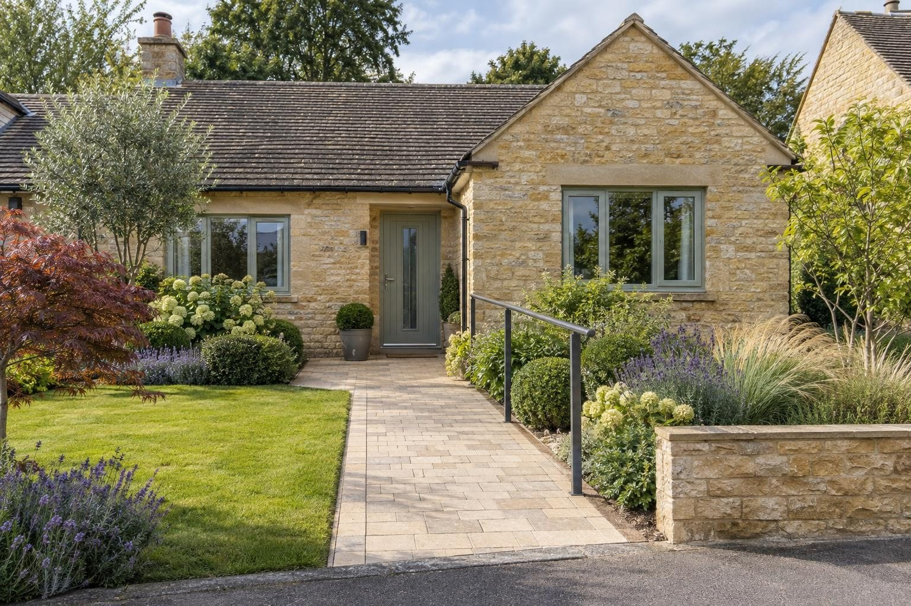

Accessible paths & ramps
Access ramps, level landings and widened paths in Rutland, Stamford and the villages around them, including Disabled Facilities Grant work.
A permanent concrete ramp with handrails and a non-slip surface typically costs up to about £2,500. Longer ramps, landings and widened paths are priced on the visit. Disabled Facilities Grant work is priced to the council's schedule. A ramp or path in the garden does not normally need planning permission, but a raised ramp or platform more than 30cm high can.
- Ramp with handrails
- Up to about £2,500
- Planning
- Not normally needed
- Guarantee
- 5 years, in writing
Guide prices from 2026 online price guides, at the higher end. Your fixed price comes in writing after the site visit.
What it is
We build permanent concrete and paved access ramps, level landings and widened paths so wheelchairs, walkers and pushchairs can get to the door safely, including adaptations funded by a Disabled Facilities Grant.
Disabled Facilities Grants
A Disabled Facilities Grant from your local council can pay for adaptations such as ramps, level access and widened paths, up to £30,000 in England, after an occupational therapist has assessed what is needed. Some councils top that up.
We work to the occupational therapist's recommendations and the council's schedule, and we are happy to work directly with council grant officers.
Built to be used every day
Gentle gradients, level landings, handrails where they are needed and a surface that stays grippy when wet. The base and drainage are what stop a ramp cracking or holding water.
Planning
A ramp or path in the garden does not normally need planning permission, but a raised ramp or platform more than 30cm high can. We build to the gradients and landings in Approved Document M, and Disabled Facilities Grant work follows the occupational therapist's recommendations.
What you get
- Gentle gradients with level landings at the top and bottom
- Handrails on both sides where they are needed
- Non-slip surfaces that drain properly
- Disabled Facilities Grant work to the council's and OT's specification
The specification
- Survey with the occupational therapist's report if there is one
- Ramp and landings set out to the right gradient
- Sub-base and concrete or paved surface
- Handrails fixed and checked
- Drainage so water does not pool on the ramp
- Five year workmanship guarantee in writing

The kind of finish we build

“Really pleased with my new driveway. Beautifully finished, friendly professional workmen, would definitely recommend and will be using them again for the garden once other renovations complete.”
Driveway — Google review
“Absolutely great guys, job was done in good time and looks brilliant. No complaints, the driveway is immaculate. More work in the near future, thanks again!”
Driveway — Google review
Things people ask us
How much does a access ramp cost?
Can I get a grant for a ramp?
How steep can a ramp be?
Accessible paths & ramps near you
- Accessible paths & ramps in Oakham
- Accessible paths & ramps in Uppingham
- Accessible paths & ramps in Stamford
- Accessible paths & ramps in Market Harborough
- Accessible paths & ramps in Corby
- Accessible paths & ramps in Kettering
- Accessible paths & ramps in Ketton
- Accessible paths & ramps in Empingham
- Accessible paths & ramps in Cottesmore
- Accessible paths & ramps in Greetham
- Accessible paths & ramps in Langham
- Accessible paths & ramps in Whissendine
- Accessible paths & ramps in Ryhall
- Accessible paths & ramps in Edith Weston
- Accessible paths & ramps in Weldon
- Accessible paths & ramps in Great Bowden
Request a site visit
We measure up, check levels and drainage, and send a written proposal with the build-up, the programme and one whole price. No pressure and no follow-up sales calls.